In [1]cell 1
from sklearn.datasets import make_regression
x,y = make_regression(n_features=1, noise=5, n_samples=10000,random_state=1)
import matplotlib.pyplot as plt
plt.scatter(x,y)
plt.xlabel('x')
plt.ylabel('y')
plt.show()
In [2]cell 4
from sklearn.model_selection import train_test_split X_train,X_test,y_train,y_test = train_test_split(x,y,test_size=0.2, random_state=0)
In [3]cell 6
from sklearn.linear_model import LinearRegression regressor = LinearRegression() regressor.fit(X_train,y_train)
Output
LinearRegression()
In [4]cell 8
X_test
Output
array([[ 1.24445906],
[ 0.98495167],
[-1.59370261],
...,
[ 0.24745387],
[ 0.05529735],
[ 0.07425068]], shape=(2000, 1))In [5]cell 10
regressor.predict(X_test)
Output
array([ 107.6063556 , 85.17598825, -137.70846548, ..., 21.43080311,
4.82186867, 6.46008839], shape=(2000,))In [6]cell 12
regressor.score(X_test,y_test)
Output
0.9966263246017432
In [7]cell 14
regressor.coef_
Output
array([86.43440685])
In [8]cell 16
regressor.intercept_
Output
np.float64(0.042274723015908955)
In [9]cell 18
import numpy as np
m = regressor.coef_[0] # the slope (coefficient)
c = regressor.intercept_ # the height at x=0 (intercept)
by_hand = m * X_test + c
by_sklearn = regressor.predict(X_test)
print("first 3 by hand :", by_hand.ravel()[:3])
print("first 3 by sklearn:", by_sklearn[:3])
print("same? ->", np.allclose(by_hand.ravel(), by_sklearn))Output
first 3 by hand : [ 107.6063556 85.17598825 -137.70846548] first 3 by sklearn: [ 107.6063556 85.17598825 -137.70846548] same? -> True
In [10]cell 20
line_x = np.linspace(x.min(), x.max(), 100).reshape(-1, 1)
line_y = regressor.predict(line_x)
plt.figure(figsize=(8, 5.5))
plt.scatter(x[:400], y[:400], s=8, alpha=0.25, label="data")
plt.plot(line_x, line_y, color="crimson", lw=2, label=f"y = {m:.2f}x + {c:.2f}")
# --- intercept: where the line crosses x = 0 ---
plt.axvline(0, color="grey", ls=":", lw=1)
plt.axhline(0, color="grey", ls=":", lw=1)
plt.scatter([0], [c], color="black", zorder=5, s=80)
plt.annotate(f"intercept_ = {c:.2f}\n(y when x = 0)",
xy=(0, c), xytext=(-3.6, 120),
arrowprops=dict(arrowstyle="->", color="black"))
# --- coefficient: the rise over a run of 1 ---
plt.plot([1, 2], [m*1 + c, m*1 + c], color="green", lw=2) # run = 1
plt.plot([2, 2], [m*1 + c, m*2 + c], color="green", lw=2) # rise = coef_
plt.annotate(f"coef_ = {m:.2f}\n(rise for a run of 1)",
xy=(2.05, m*1.5 + c), xytext=(2.3, -70),
arrowprops=dict(arrowstyle="->", color="green"))
plt.xlabel("x"); plt.ylabel("y"); plt.legend(loc="upper left")
plt.title("intercept_ places the line, coef_ tilts it")
plt.show()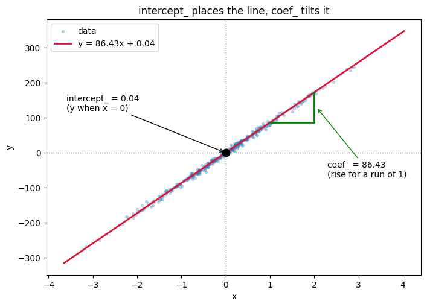
In [11]cell 22
xs = np.linspace(-3, 3, 50)
fig, ax = plt.subplots(1, 2, figsize=(11, 4))
for slope in [20, 86, 160]: # intercept fixed
ax[0].plot(xs, slope * xs + c, label=f"coef_ = {slope}")
ax[0].set_title("change coef_ -> the line TILTS")
for shift in [-150, 0, 150]: # slope fixed
ax[1].plot(xs, m * xs + shift, label=f"intercept_ = {shift}")
ax[1].set_title("change intercept_ -> the line SHIFTS")
for a in ax:
a.axhline(0, color="grey", lw=0.8)
a.axvline(0, color="grey", lw=0.8)
a.set_xlabel("x"); a.set_ylabel("y"); a.legend(fontsize=8)
plt.tight_layout(); plt.show()
In [12]cell 25
y_pred = regressor.predict(x) y_pred
Output
array([ 130.08472986, -44.53477921, -167.86426893, ..., -142.37365931,
13.8749839 , -72.20838078], shape=(10000,))In [13]cell 27
plt.scatter(x,y,label="Actual")
plt.scatter(x,y_pred,label="Predicted")
plt.xlabel('X')
plt.ylabel('Y')
plt.legend()
plt.show()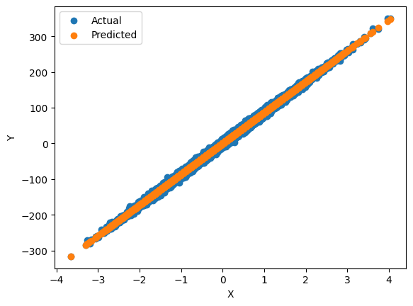
In [14]cell 31
def cost(m_try, c_try):
# average squared vertical gap over the 8000 training rows
predicted = m_try * X_train.ravel() + c_try
return ((y_train - predicted) ** 2).mean()
print("sklearn's line m=86.43, c=0.04 :", round(cost(m, c), 2))
print("too flat m=50.00, c=0.04 :", round(cost(50, c), 2))
print("too steep m=120.0, c=0.04 :", round(cost(120, c), 2))
print("right tilt, too high m=86.43, c=100 :", round(cost(m, 100), 2))Output
sklearn's line m=86.43, c=0.04 : 25.6 too flat m=50.00, c=0.04 : 1350.4 too steep m=120.0, c=0.04 : 1149.99 right tilt, too high m=86.43, c=100 : 10017.15
In [15]cell 33
slopes = np.linspace(m - 60, m + 60, 200)
intercepts = np.linspace(c - 200, c + 200, 200)
best = cost(m, c)
fig, ax = plt.subplots(1, 2, figsize=(11, 4))
ax[0].plot(slopes, [cost(s, c) for s in slopes], color="crimson")
ax[0].axvline(m, ls="--", color="black")
ax[0].scatter([m], [best], color="black", zorder=5)
ax[0].annotate(f"lowest point\ncoef_ = {m:.2f}", xy=(m, best), xytext=(0.08, 0.62),
textcoords="axes fraction", arrowprops=dict(arrowstyle="->"))
ax[0].set_title("cost while sliding the slope")
ax[0].set_xlabel("coef_ (slope)")
ax[1].plot(intercepts, [cost(m, i) for i in intercepts], color="crimson")
ax[1].axvline(c, ls="--", color="black")
ax[1].scatter([c], [best], color="black", zorder=5)
ax[1].annotate(f"lowest point\nintercept_ = {c:.2f}", xy=(c, best), xytext=(0.08, 0.62),
textcoords="axes fraction", arrowprops=dict(arrowstyle="->"))
ax[1].set_title("cost while sliding the intercept")
ax[1].set_xlabel("intercept_")
for a in ax:
a.set_ylabel("cost (mean squared gap)")
plt.tight_layout(); plt.show()
In [16]cell 35
xt = X_train.ravel()
yt = y_train
m_hand = ((xt - xt.mean()) * (yt - yt.mean())).sum() / ((xt - xt.mean()) ** 2).sum()
c_hand = yt.mean() - m_hand * xt.mean()
print("my formula -> m =", m_hand, " c =", c_hand)
print("sklearn -> m =", m, " c =", c)
print("same? ->", np.allclose([m_hand, c_hand], [m, c]))Output
my formula -> m = 86.43440685172207 c = 0.042274723015908844 sklearn -> m = 86.43440685172204 c = 0.042274723015908955 same? -> True
In [17]cell 37
X_b = np.c_[np.ones(len(X_train)), X_train] # glue the column of 1s in front
beta = np.linalg.inv(X_b.T @ X_b) @ X_b.T @ y_train
print("beta ->", beta) # [intercept, coefficient]
print("sklearn -> [", c, ",", m, "]")
print("same? ->", np.allclose(beta, [c, m]))Output
beta -> [4.22747230e-02 8.64344069e+01] sklearn -> [ 0.042274723015908955 , 86.43440685172204 ] same? -> True
In [18]cell 39
print("rank_ :", regressor.rank_) # how many columns were actually independent
print("singular_ :", regressor.singular_) # the SVD's singular values
# reproduce sklearn's own three steps by hand
X_off, y_off = X_train.mean(axis=0), y_train.mean() # 1. centre
coef_svd = np.linalg.lstsq(X_train - X_off, y_train - y_off, rcond=None)[0] # 2. lstsq
intercept_svd = y_off - X_off @ coef_svd # 3. intercept back
print("\nby sklearn's own route ->", coef_svd, intercept_svd)
print("same? ->", np.allclose([coef_svd[0], intercept_svd], [m, c]))Output
rank_ : 1 singular_ : [89.35213963] by sklearn's own route -> [86.43440685] 0.042274723015908955 same? -> True
In [19]cell 41
m_gd, c_gd = 0.0, 0.0 # start at a deliberately wrong guess
learning_rate = 0.1
path = []
for step in range(60):
predicted = m_gd * xt + c_gd
error = predicted - yt
down_m = 2 * (error * xt).mean() # which way is downhill for the slope
down_c = 2 * error.mean() # which way is downhill for the intercept
m_gd -= learning_rate * down_m # take one small step
c_gd -= learning_rate * down_c
path.append((m_gd, c_gd, (error ** 2).mean()))
if step in (0, 1, 2, 5, 10, 20, 40, 59):
print(f"step {step:>2} m = {m_gd:8.4f} c = {c_gd:7.4f} cost = {(error ** 2).mean():12.2f}")
print("\ngradient descent ->", round(m_gd, 6), round(c_gd, 6))
print("the formula ->", round(m, 6), round(c, 6))Output
step 0 m = 17.2522 c = 0.0764 cost = 7481.53 step 1 m = 31.0608 c = 0.1239 cost = 4802.15 step 2 m = 42.1132 c = 0.1511 cost = 3085.65 step 5 m = 63.7075 c = 0.1649 cost = 830.20 step 10 m = 78.9683 c = 0.1190 cost = 112.44 step 20 m = 85.6286 c = 0.0584 cost = 26.61 step 40 m = 86.4250 c = 0.0426 cost = 25.60 step 59 m = 86.4343 c = 0.0423 cost = 25.60 gradient descent -> 86.43427 0.042283 the formula -> 86.434407 0.042275
In [20]cell 43
path = np.array(path)
M, C = np.meshgrid(np.linspace(-5, 110, 80), np.linspace(-40, 40, 80))
Z = np.array([[cost(mm, cc) for mm, cc in zip(row_m, row_c)] for row_m, row_c in zip(M, C)])
fig, ax = plt.subplots(1, 2, figsize=(12, 4.5))
ax[0].contourf(M, C, np.log10(Z), levels=30, cmap="Blues_r")
ax[0].plot(path[:, 0], path[:, 1], "o-", color="orange", ms=3, lw=1, label="each step")
ax[0].scatter([0], [0], color="red", s=60, zorder=5, label="start (0, 0)")
ax[0].scatter([m], [c], marker="*", color="lime", s=280, zorder=5, label="the formula's answer")
ax[0].set_xlabel("coef_"); ax[0].set_ylabel("intercept_")
ax[0].set_title("walking downhill on the cost bowl"); ax[0].legend(fontsize=8)
ax[1].plot(path[:, 2], color="crimson")
ax[1].set_yscale("log")
ax[1].set_xlabel("step"); ax[1].set_ylabel("cost (log scale)")
ax[1].set_title("cost drops fast, then flattens - it has arrived")
plt.tight_layout(); plt.show()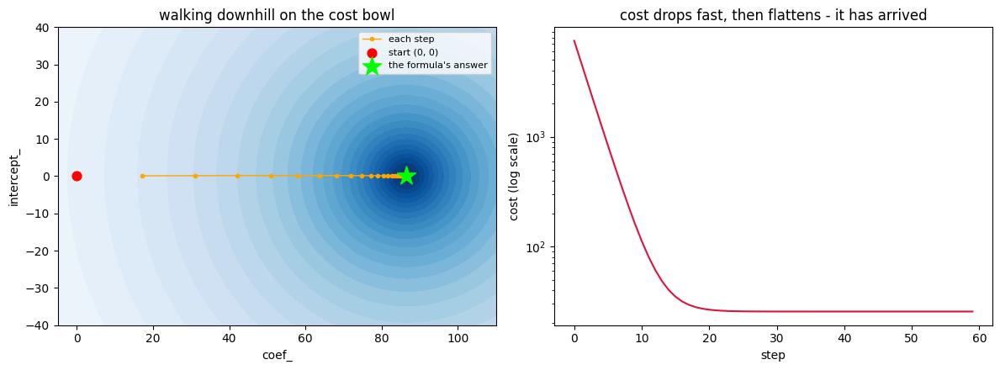
In [21]cell 46
X_dup = np.c_[X_train, X_train] # column 2 is an exact copy of column 1
dup_model = LinearRegression().fit(X_dup, y_train)
print("coefficients :", dup_model.coef_, "-> they add up to", dup_model.coef_.sum())
print("rank_ :", dup_model.rank_, "of", X_dup.shape[1], "columns")
# meanwhile, the raw normal equation on the same data
gram = np.c_[np.ones(len(X_dup)), X_dup]
gram = gram.T @ gram
print("\ncondition number of X.T @ X :", f"{np.linalg.cond(gram):.3e}", " (huge = not invertible)")
try:
np.linalg.inv(gram)
print("np.linalg.inv returned something, but at this condition number it is meaningless")
except np.linalg.LinAlgError as e:
print("np.linalg.inv says:", e)Output
coefficients : [43.21720343 43.21720343] -> they add up to 86.43440685172203 rank_ : 1 of 2 columns condition number of X.T @ X : 2.495e+32 (huge = not invertible) np.linalg.inv says: Singular matrix
In [22]cell 2
import numpy as np
import matplotlib.pyplot as plt
x = np.array([1, 2, 3, 4, 5]) # years of experience
y = np.array([30, 35, 50, 55, 60]) # salary in thousands
plt.scatter(x, y, s=80)
plt.xlabel("x (years)")
plt.ylabel("y (salary)")
plt.grid(alpha=0.3)
plt.show()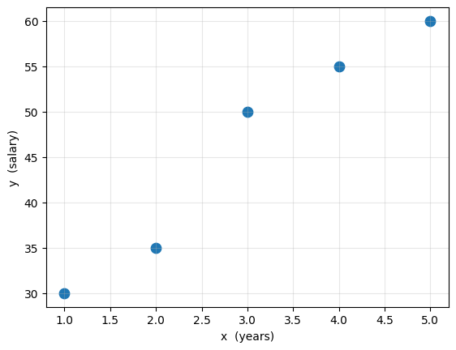
In [23]cell 5
x_bar = x.mean()
y_bar = y.mean()
print("average x =", x_bar)
print("average y =", y_bar)Output
average x = 3.0 average y = 46.0
In [24]cell 7
x_diff = x - x_bar print(x_diff)
Output
[-2. -1. 0. 1. 2.]
In [25]cell 9
y_diff = y - y_bar print(y_diff)
Output
[-16. -11. 4. 9. 14.]
In [26]cell 11
products = x_diff * y_diff
print("each row :", products)
print("top :", products.sum())Output
each row : [32. 11. 0. 9. 28.] top : 80.0
In [27]cell 13
squares = x_diff ** 2
print("each row :", squares)
print("bottom :", squares.sum())Output
each row : [4. 1. 0. 1. 4.] bottom : 10.0
In [28]cell 15
m = products.sum() / squares.sum()
print("coef_ =", m)Output
coef_ = 8.0
In [29]cell 17
c = y_bar - m * x_bar
print("intercept_ =", c)
print()
print(f"our line: y = {m} * x + {c}")Output
intercept_ = 22.0 our line: y = 8.0 * x + 22.0
In [30]cell 20
fig, ax = plt.subplots(figsize=(8.5, 6))
# the crosshairs through the average point
ax.axvline(x_bar, color="grey", ls="--", lw=1)
ax.axhline(y_bar, color="grey", ls="--", lw=1)
# one rectangle per person: width = x - x̄, height = y - ȳ, area = the product
for xi, yi, p in zip(x, y, products):
colour = "seagreen" if p > 0 else "indianred"
ax.add_patch(plt.Rectangle((min(xi, x_bar), min(yi, y_bar)),
abs(xi - x_bar), abs(yi - y_bar),
facecolor=colour, alpha=0.22, edgecolor=colour, lw=1.5))
if p != 0:
ax.annotate(f"{p:.0f}", xy=((xi + x_bar) / 2, (yi + y_bar) / 2),
ha="center", va="center", fontsize=13, fontweight="bold", color=colour)
ax.scatter(x, y, s=90, color="steelblue", zorder=5)
ax.scatter([x_bar], [y_bar], marker="*", s=380, color="black", zorder=6)
ax.annotate("average point (3, 46)", xy=(x_bar, y_bar), xytext=(3.3, 31),
arrowprops=dict(arrowstyle="->"))
# what each quadrant does to the total
ax.text(5.5, 64, "+", fontsize=22, color="seagreen", ha="center")
ax.text(0.7, 29, "+", fontsize=22, color="seagreen", ha="center")
ax.text(0.7, 64, "−", fontsize=22, color="indianred", ha="center")
ax.text(5.5, 29, "−", fontsize=22, color="indianred", ha="center")
ax.text(5.5, 61, "above avg on both", fontsize=8, color="seagreen", ha="center")
ax.text(0.7, 32, "below avg on both", fontsize=8, color="seagreen", ha="center")
ax.text(0.7, 61, "few years,\nhigh salary", fontsize=8, color="indianred", ha="center")
ax.text(5.5, 26.5, "many years,\nlow salary", fontsize=8, color="indianred", ha="center")
ax.set_xlim(0.2, 6.1); ax.set_ylim(24, 68)
ax.set_xlabel("x (years)"); ax.set_ylabel("y (salary)")
ax.set_title("TOP = total shaded area = 32 + 11 + 0 + 9 + 28 = 80")
plt.show()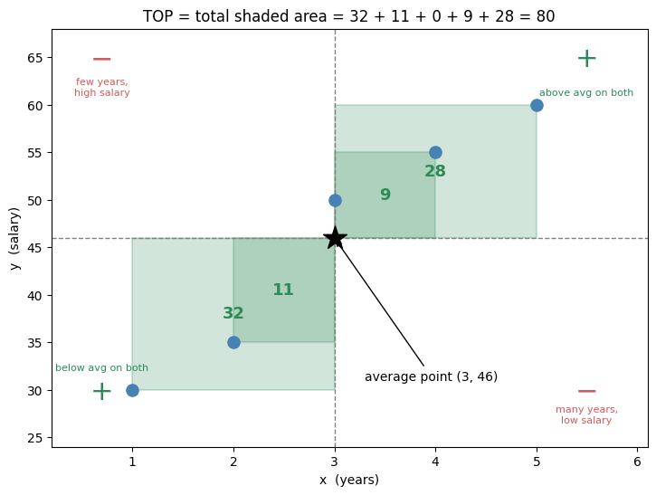
In [31]cell 23
fig, ax = plt.subplots(figsize=(10, 3.2))
slots = [0, 2.8, 5.6, 8.4, 11.2] # one slot per person, spaced out
names = ["A", "B", "C", "D", "E"]
for slot, name, d, s in zip(slots, names, x_diff, squares):
side = abs(d)
if side > 0:
ax.add_patch(plt.Rectangle((slot - side / 2, 0), side, side,
facecolor="steelblue", alpha=0.3, edgecolor="steelblue", lw=1.5))
ax.annotate(f"{s:.0f}", xy=(slot, side / 2), ha="center", va="center",
fontsize=13, fontweight="bold", color="steelblue")
else:
ax.scatter([slot], [0.03], color="steelblue", s=60)
ax.annotate("0", xy=(slot, 0.25), ha="center", fontsize=13,
fontweight="bold", color="steelblue")
ax.annotate(f"{name}\nx − 3 = {d:+.0f}", xy=(slot, -0.55), ha="center", fontsize=9)
ax.set_xlim(-1.8, 13); ax.set_ylim(-1.0, 2.6)
ax.set_aspect("equal"); ax.axis("off")
ax.set_title("BOTTOM = total area of these squares = 4 + 1 + 0 + 1 + 4 = 10")
plt.show()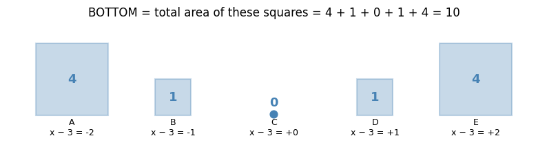
In [32]cell 26
fig, ax = plt.subplots(figsize=(10, 2.4))
for k in range(10):
ax.add_patch(plt.Rectangle((k * 8, 0), 8, 1, facecolor="seagreen",
alpha=0.25, edgecolor="seagreen", lw=1.2))
ax.annotate("8", xy=(k * 8 + 4, 0.5), ha="center", va="center", fontsize=11)
ax.annotate("TOP = 80", xy=(40, 1.45), ha="center", fontsize=12, fontweight="bold", color="seagreen")
ax.annotate("cut into BOTTOM = 10 equal pieces → each piece is 8 → coef_ = 8",
xy=(40, -0.55), ha="center", fontsize=11)
ax.set_xlim(-3, 83); ax.set_ylim(-1.1, 2.0); ax.axis("off")
plt.show()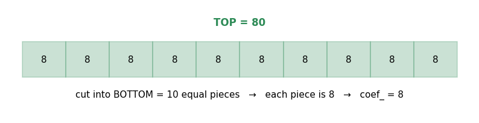
In [33]cell 29
line_x = np.linspace(-0.2, 6, 50)
fig, ax = plt.subplots(figsize=(8.5, 6))
ax.plot(line_x, m * line_x + c, color="crimson", lw=2, label=f"y = {m:.0f}x + {c:.0f}")
ax.scatter(x, y, s=80, color="steelblue", zorder=5, label="the 5 people")
# three hops back along the line, from the average point to the y-axis
for step in range(3):
x0 = x_bar - step
ax.annotate("", xy=(x0 - 1, m * (x0 - 1) + c), xytext=(x0, m * x0 + c),
arrowprops=dict(arrowstyle="-|>", color="darkorange", lw=2.5))
ax.annotate("−8", xy=(x0 - 0.5, m * (x0 - 0.5) + c + 2.5),
color="darkorange", ha="center", fontsize=12, fontweight="bold")
ax.scatter([x_bar], [y_bar], marker="*", s=380, color="green", zorder=6,
label="start here: average point (3, 46)")
ax.scatter([0], [c], color="black", s=110, zorder=6, label=f"arrive here: intercept_ = {c:.0f}")
ax.axvline(0, color="grey", lw=1)
ax.annotate("3 years back,\n8 lost each time,\n46 − 24 = 22", xy=(0, c), xytext=(1.9, 26.5),
arrowprops=dict(arrowstyle="->"), fontsize=10)
ax.set_xlim(-0.5, 6); ax.set_ylim(20, 68)
ax.set_xlabel("x (years)"); ax.set_ylabel("y (salary)")
ax.legend(loc="lower right", fontsize=9); ax.grid(alpha=0.25)
ax.set_title("intercept_ = walk from the average point back to x = 0")
plt.show()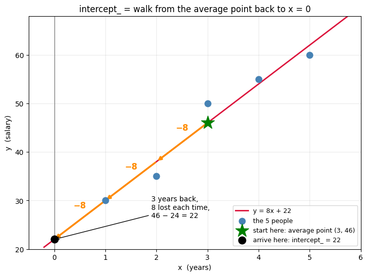
In [34]cell 1
import pandas as pd # pandas: load the CSV and work with it as a table (DataFrame) import seaborn as sns # seaborn: nicer statistical plots, built on top of matplotlib import matplotlib.pyplot as plt # matplotlib: base plotting library, used here for fine control (labels, legends, saving files) from sklearn.model_selection import train_test_split # splits our data into a training pool and a held-back testing pool from sklearn.linear_model import LinearRegression # the actual Simple Linear Regression model class
In [35]cell 3
dataset = pd.read_csv("../../_shared_data/placement.csv") # read the CSV file from disk into a pandas DataFrame called "dataset"In [36]cell 5
dataset.head(3) # show only the first 3 rows, just to eyeball the columns and their values
Output
cgpa package 0 6.89 3.26 1 5.12 1.98 2 7.82 3.25
In [37]cell 7
dataset.isnull().sum() # count missing values in every column — should be 0 for both, since this dataset is already clean
Output
cgpa 0 package 0 dtype: int64
In [38]cell 9
x = dataset["cgpa"] # pull out just the "cgpa" column, using single brackets — this returns a 1-D pandas Series, not a table x # display it, to see what we just built
Output
0 6.89
1 5.12
2 7.82
3 7.42
4 6.94
...
95 5.22
96 7.16
97 6.06
98 6.61
99 7.15
Name: cgpa, Length: 100, dtype: float64In [39]cell 11
x.ndim # 1 = one dimension (a flat Series), not the 2-D table shape scikit-learn expects for its inputs
Output
1
In [40]cell 13
x = dataset[["cgpa"]] # double brackets: pass a list of one column name, so pandas keeps this as a DataFrame (2-D table), not a flattened Series
In [41]cell 14
x.ndim # now 2 = two dimensions (a table with 1 column) — this is the shape scikit-learn expects
Output
2
In [42]cell 16
y = dataset["package"] # pull out the "package" column as a 1-D Series — this is fine for y, unlike x y # display it
Output
0 3.26
1 1.98
2 3.25
3 3.67
4 3.57
...
95 1.60
96 2.61
97 2.49
98 3.23
99 3.06
Name: package, Length: 100, dtype: float64In [43]cell 18
plt.figure(figsize=(5,3)) # open a new, fairly small figure to draw on sns.scatterplot(x="cgpa", y="package", data=dataset) # one dot per student: cgpa on the x-axis, package on the y-axis plt.show() # render the plot
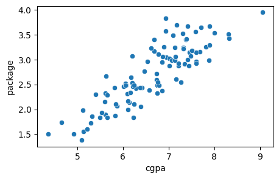
In [44]cell 21
x_train, x_test, y_train, y_test = train_test_split(x, y, test_size=0.2, random_state=42) # 80 rows go to *_train, 20 rows go to *_test
In [45]cell 23
lr = LinearRegression() # create a fresh, untrained Simple Linear Regression model lr.fit(x_train, y_train) # train it on the 80 training rows — this is where sklearn works out the best m (slope) and c (intercept)
Output
LinearRegression()
In [46]cell 25
# row 0 in the CSV: cgpa=6.89, package=3.26 (actual) — let's see what the model predicts for that same cgpa new_row = pd.DataFrame([[6.89]], columns=["cgpa"]) # wrap the new cgpa value in a DataFrame with the matching column name lr.predict(new_row) # ask the trained model to predict the package for cgpa=6.89
Output
array([2.83654417])
In [47]cell 28
lr.score(x_test, y_test) * 100 # R² score on the 20 held-back test rows, as a percentage-style number
Output
68.79138403839303
In [48]cell 31
lr.coef_ # the slope, m — an array because sklearn supports many features at once; here there's only one value, for "cgpa". Positive → the line rises left to right.
Output
array([0.58176641])
In [49]cell 32
lr.intercept_ # the intercept, c — a single number here. Negative → the line crosses the y-axis below zero (it dips below the x-axis before turning positive).
Output
np.float64(-1.1718264038996313)
In [50]cell 34
# y = 0.58176641 * x + (-1.1718264038996313) <- this run's fitted line, shown for reference only; the next cell reads these numbers from the model itself instead of retyping them
In [51]cell 36
m = lr.coef_[0] # pull the slope straight out of the trained model, instead of retyping the printed number c = lr.intercept_ # pull the intercept straight out of the trained model manual_prediction = m * 6.89 + c # apply y = m*x + c by hand, for the same cgpa=6.89 used in Step 11 manual_prediction
Output
np.float64(2.8365441666439155)
In [52]cell 39
y_prd = lr.predict(x) # predict the package for every row in x (all 100 students) — used to draw the fitted line
In [53]cell 41
plt.figure(figsize=(6,4)) # open a new figure, a bit wider for the legend/labels
sns.scatterplot(x="cgpa", y="package", data=dataset, label="Actual data") # label the real data points, so the legend can find them
plt.plot(dataset["cgpa"], y_prd, c="red", label="Predicted line") # label the fitted line the same way
plt.xlabel("CGPA") # name the x-axis
plt.ylabel("Package (LPA)") # name the y-axis
plt.title("CGPA vs Package — Actual Data vs Fitted Regression Line") # title the chart
plt.legend() # this now works: it reads the labels above automatically, no args needed
plt.savefig("predict.jpg") # save a copy of the chart to disk, as before
plt.show() # render it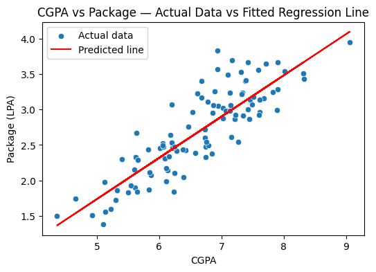
In [54]cell 43
plt.figure(figsize=(6,4)) # new figure for this visualization
sns.scatterplot(x="cgpa", y="package", data=dataset, label="Actual data") # the real data points again
plt.plot(dataset["cgpa"], y_prd, c="red", label="Predicted line") # the fitted line again
plt.vlines(dataset["cgpa"], y, y_prd, colors="gray", linestyles="dashed", alpha=0.6, label="Residual") # one dashed line per student, from actual y down/up to predicted y
plt.xlabel("CGPA")
plt.ylabel("Package (LPA)")
plt.title("Residuals — the Gap Between Actual and Predicted Package")
plt.legend()
plt.show()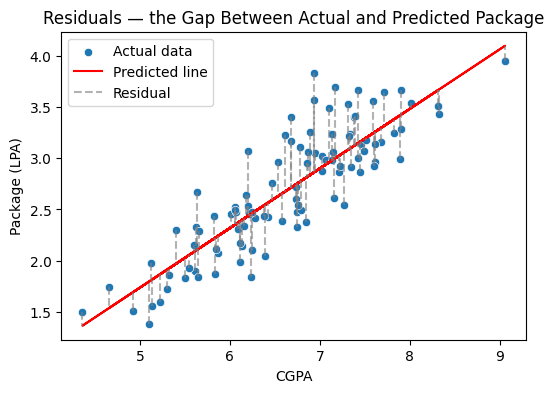
In [55]cell 45
residuals = y - y_prd # actual minus predicted, for every student — positive means the model under-predicted, negative means it over-predicted
plt.figure(figsize=(6,4))
sns.scatterplot(x=y_prd, y=residuals) # predicted package on x, residual on y
plt.axhline(0, color="red", linestyle="--") # a flat reference line at residual=0, i.e. "perfect prediction"
plt.xlabel("Predicted Package")
plt.ylabel("Residual (Actual − Predicted)")
plt.title("Residuals vs Predicted Values")
plt.show()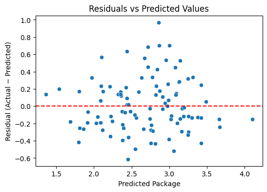
In [56]cell 47
plt.figure(figsize=(5,3))
sns.histplot(residuals, kde=True, color="teal") # bar-chart of how often each residual size occurs, plus a smoothed curve (kde) over it
plt.axvline(0, color="red", linestyle="--") # mark residual=0 for reference
plt.xlabel("Residual (Actual − Predicted)")
plt.title("Distribution of Residuals")
plt.show()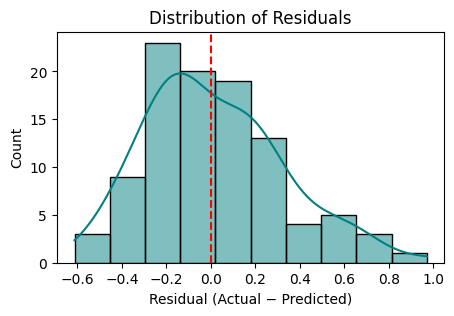
In [57]cell 49
plt.figure(figsize=(5,5))
sns.scatterplot(x=y, y=y_prd) # actual package on x, predicted package on y
lims = [min(y.min(), y_prd.min()), max(y.max(), y_prd.max())] # shared axis limits, so the diagonal line spans the full plot
plt.plot(lims, lims, color="red", linestyle="--", label="Perfect prediction (actual = predicted)") # the y = x reference line
plt.xlabel("Actual Package")
plt.ylabel("Predicted Package")
plt.title("Actual vs Predicted Package")
plt.legend()
plt.show()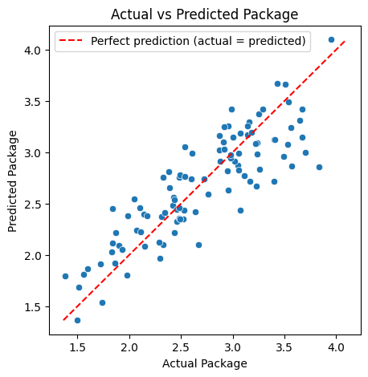